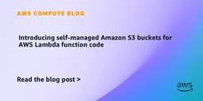

AWS Compute Blog
フィード

Serverless ICYMI Q2 2026 1
1
AWS Compute Blog
In this 33rd quarterly recap post, discover the most impactful AWS serverless launches, features, and resources from Q2 2026 that you might have missed. Stay current with the latest serverless innovations that can improve your applications. In case you missed our last ICYMI, read about what happened in Q1 2026. AWS Lambda MicroVMs AWS Lambda […]
4日前

Introducing self-managed Amazon S3 buckets for AWS Lambda function code 2
AWS Compute Blog
If you manage Lambda functions at scale, you’ve likely hit the 75 GB code storage limit or explained to your security team why deployment artifacts live in an S3 bucket you don’t control. Today, we’re announcing self-managed Amazon S3 buckets for AWS Lambda deployment packages. Lambda reads your code directly from your bucket, eliminating quota […]
7日前

New: Enhanced AssetState dimension for AWS Outposts capacity metrics on Amazon CloudWatch
AWS Compute Blog
Today, we are releasing an expanded format of our Amazon CloudWatch dimensions for AWS Outposts capacity metrics. The existing CloudWatch metrics, AvailableInstanceType_Count, UsedInstanceType_Count, InstanceTypeCapacityAvailability, and InstanceTypeCapacityUtilization for Outposts, can now be grouped using the new AssetState dimension with values: Active, Isolated, or Retiring. In this post, we describe what’s changing and how you can use […]
9日前
Introducing modularized kernel cryptography in Amazon Linux
AWS Compute Blog
We are introducing modularized kernel cryptography in Amazon Linux 2023, an approach that separates Federal Information Processing Standard (FIPS) 140-3 cryptographic components into an independent kernel module that can be certified once and reused across subsequent kernel versions. In this post, we describe how this modular approach works, what it means for FIPS compliance workflows, […]
10日前
Eliminating Java cold starts with AWS Lambda Managed Instances
AWS Compute Blog
A single cold start can push your Java Lambda function’s response time from milliseconds to seconds, enough to violate your p99 SLA, timeout a downstream service, and page your on-call. The Java Virtual Machine (JVM) performs best in long-running processes. Its Just-In-Time (JIT) compiler progressively optimizes code over thousands of invocations. Standard serverless execution environments […]
11日前
Architecting for IOPS and throughput performance on AWS Outposts racks
AWS Compute Blog
AWS Outposts extend AWS infrastructure, services, APIs, and tools to on-premises locations for workloads that require low latency, local data processing, or data residency. In this post, you learn how to configure instances running on an Outpost to support the required IOPS and throughput for your application. The actual IOPS available to an instance is […]
14日前
Announcing Lambda MicroVMs: serverless compute environments with VM-level isolation and near-instant startup
AWS Compute Blog
We recently announced the launch of AWS Lambda MicroVMs, a new serverless compute primitive that provides VM-level isolation, near-instant startup performance, and state retention. You can now give each user or job their own execution environment to securely run just-in-time code – either user or AI generated – without managing virtualization infrastructure or choosing between […]
14日前
Secure code execution for AI agents with AWS Lambda MicroVMs
AWS Compute Blog
Development teams building serverless applications with AI coding agents face the question of how to let those agents generate and execute code without losing control over governance. Agent-generated code needs a secure environment to execute, isolated from production systems and the developer’s local environment. Addressing this requires three things working together: a secure execution sandbox, […]
14日前
Accelerate multiplayer game hosting with AWS m8azn instances
AWS Compute Blog
Online multiplayer gaming continues to grow, with players demanding lower latency, higher concurrency, and more immersive experiences than ever before. For game studios hosting dedicated multiplayer servers on AWS, infrastructure decisions directly impact player experience and retention, server tick rates, and ultimately, revenue. Games are becoming more computationally demanding while offering richer gameplay experiences. Studios […]
16日前
Uncover new performance insights using Amazon detailed performance statistics on Windows
AWS Compute Blog
The primary storage solutions for EC2 Windows instances, Amazon EC2 Instance Store and Amazon Elastic Block Store (Amazon EBS) , now provide detailed performance statistics for real-time monitoring. Real-time monitoring enables you to gain visibility into key performance metrics, such as latency, throughput, and IOPS, allowing you to detect and address potential bottlenecks or issues […]
18日前
Building fault-tolerant multi-agent AI workflows with AWS Lambda durable functions
AWS Compute Blog
Agentic AI workflows coordinate multiple agents that reason, plan, and act across multi-step processes. Each step is expensive, non-deterministic, and unpredictable in latency. Human review gates can pause execution for days. Transient failures are expected, and restarting a half-finished workflow wastes time and money. Duplicate actions, like charging a payment twice or sending the same […]
25日前
Build reliable voice analytics workflows with AWS Lambda durable functions and Amazon Bedrock
AWS Compute Blog
Contact centers handle millions of voice interactions monthly, but transforming raw call recordings into actionable insights remains a manual and fragile process. With voice analytics workflows, you can decrease the average handle time of a voice call from minutes to seconds and increase the efficiency and productivity of your support agents. Today, these workflows often […]
1ヶ月前
Maximize Amazon EC2 Capacity Reservations with Capacity Manager data exports
AWS Compute Blog
In our previous post, we introduced Amazon EC2 Capacity Manager and its data export capability. Amazon EC2 Capacity Manager provides centralized visibility into your Amazon Elastic Compute Cloud (Amazon EC2) capacity usage across all accounts and Regions in your organization. It tracks capacity usage for three types of EC2 capacity: On-Demand instances, Spot instances, and […]
1ヶ月前
Modernizing Lambda + S3 workloads with Amazon S3 Files
AWS Compute Blog
Learn how Amazon S3 Files simplifies Lambda functions by eliminating transfer code and /tmp constraints. See three modernization patterns with code examples for image processing, ETL pipelines, and multi-agent AI workloads. AWS Lambda functions that interact with Amazon Simple Storage Service (Amazon S3) typically follow a familiar pattern: download an object to /tmp, process it […]
1ヶ月前
Simplify AWS Outposts lifecycle management with new self-service capabilities
AWS Compute Blog
In this post, we introduce new self-service capabilities for managing the full AWS Outposts lifecycle: configuration and quoting, subscription visibility, and end-of-term renewal and decommissioning. These capabilities reduce the time and coordination previously required, giving you direct control over your Outposts from evaluation through end of term. These tools are available now in all commercial AWS Regions that support AWS Outposts.
1ヶ月前
Upgrading Lambda function runtimes at scale with AWS Transform custom
AWS Compute Blog
When you create an AWS Lambda function, you choose the runtime that Lambda will use to run your code. This includes the base language version and supporting libraries. Lambda runtimes follow a published deprecation schedule. This means that you must periodically upgrade your function’s runtime. Running on a deprecated runtime means potential security exposure, loss […]
1ヶ月前
Simulating Amazon EC2 EBS burst credits before downsizing an instance
AWS Compute Blog
When downsizing an Amazon Elastic Compute Cloud (Amazon EC2) instance, teams often evaluate CPU and memory utilization but overlook the instance’s Amazon Elastic Block Store (Amazon EBS) performance limits for throughput and IOPS. Smaller Amazon EBS-optimized instance types have lower baselines and rely on burst credits to handle peaks. If your workload’s I/O pattern drains […]
1ヶ月前
AWS Nitro Isolation Engine: Formally verifying the hypervisor in the AWS Nitro System
AWS Compute Blog
Ali Saidi is a VP and Distinguished Engineer at AWS Millions of customers use the AWS Nitro System to protect their most sensitive workloads, and AWS is an industry leader in innovation to secure customer data. Helping our customers keep their data secure and confidential is our highest priority, and we continue to make investments […]
1ヶ月前
Build RAG-powered AI solutions at the edge with AWS Local Zones and Outposts
AWS Compute Blog
Organizations in regulated industries or with strict information security requirements are increasingly looking to use generative AI. However, they often face a dilemma: how to utilize powerful models while keeping data strictly on-premises or within specific geographic boundaries. The solution lies in deploying self-managed Small Language Models (SLMs) on premises with AWS Outposts or in […]
1ヶ月前
Optimize EC2 costs with AWS Compute Optimizer right sizing
AWS Compute Blog
One of the most impactful ways to improve the ROI on your Amazon Elastic Compute Cloud (Amazon EC2) investment is rightsizing — when you match your instance types and sizes to the actual resource demands of your workloads. However, doing this manually across hundreds or thousands of instances is time-consuming and error-prone. AWS Compute Optimizer […]
1ヶ月前